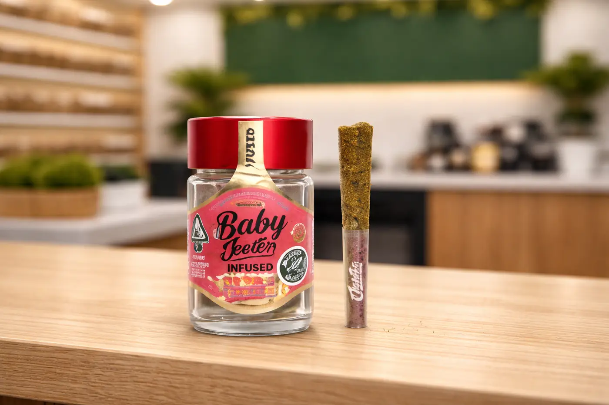
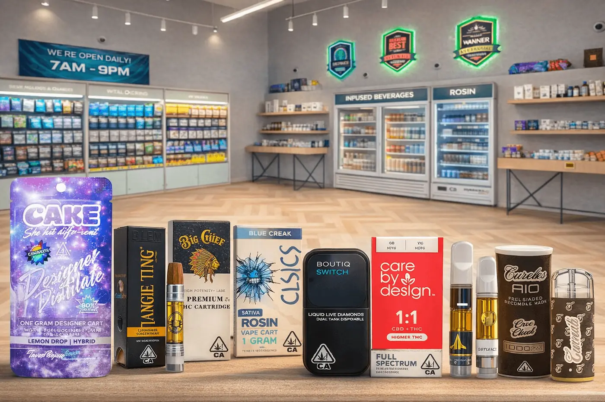

Porcentaje de Vapeo de Cannabis para Principiantes: ¿Con Cuánto THC Deberías Comenzar?
May 29, 2026 · 6 min de lectura

Si eres nuevo en el vapeo, entender el porcentaje de vapeo de cannabis para principiantes es uno de los pasos más importantes antes de dar tu primera calada. Los cartuchos de vapeo a menudo muestran porcentajes de THC que parecen intimidantes: 70%, 80%, incluso 90% de THC. Para alguien que está pasando de la flor o probando cannabis por primera vez, esos números pueden parecer abrumadores. Pero aquí está lo que la mayoría de los principiantes no se da cuenta: el porcentaje de THC por sí solo no determina toda tu experiencia. La dosis, la duración de la inhalación, la tolerancia y el tipo de producto juegan un papel.
En Wellgreens Dispensary, una de las preguntas más comunes que hacen los nuevos clientes es sobre el porcentaje adecuado de vapeo de cannabis para principiantes y cómo evitar tomar demasiado demasiado rápido. Comenzar con la potencia adecuada, y usarla correctamente, puede significar la diferencia entre una introducción cómoda y una experiencia que se siente demasiado intensa. Esta guía lo desglosa claramente para que puedas comenzar con confianza y responsabilidad.
Saltar a:

- TLDR: Guía Rápida
- ¿Qué Significa Realmente el Porcentaje de THC en un Vape?
- Por Qué los Porcentajes Altos Pueden Sentirse Más Fuertes
- ¿Con Qué Porcentaje de THC Deberían Comenzar los Principiantes?
- La Importancia de la Técnica de Inhalación
- Resina Viva vs Destilado para Principiantes
- Voltaje Ajustable y Sesiones Más Suaves
- Señales de que Puede que Hayas Tomado Demasiado
- Cómo Construir Tolerancia Gradualmente
- Conclusiones Clave
- Preguntas Frecuentes
TLDR: Guía Rápida
• La mayoría de los cartuchos de vapeo varían entre 70%: 90% de THC.
• Un porcentaje alto no significa que debas inhalar más.
• Los principiantes deben enfocarse en caladas pequeñas y controladas, no en perseguir números.
• Una inhalación de 2: 3 segundos suele ser suficiente para comenzar.
• Espera 10: 15 minutos antes de tomar otra calada.
• Configuraciones de voltaje más bajas ayudan a crear una primera experiencia más suave.
¿Qué Significa Realmente el Porcentaje de THC en un Vape?

Al hablar del porcentaje de vapeo de cannabis para principiantes, es importante entender qué representa el porcentaje de THC. El porcentaje listado en un cartucho de vapeo se refiere a la concentración de THC en el aceite. Por ejemplo, un cartucho de 80% de THC significa que el 80% del peso del aceite es THC.
A diferencia de la flor, que típicamente varía entre 15% y 30% de THC, los cartuchos de vapeo contienen extractos concentrados. Por eso los números parecen mucho más altos. Sin embargo, debido a que el vapor se inhala en pequeñas cantidades por calada, la dosis real que consumes depende más de cuánto tiempo y con qué frecuencia inhalas que solo del porcentaje impreso en el paquete.
Para los principiantes, esta distinción es crítica. Un cartucho etiquetado con 85% de THC no significa automáticamente que tendrás una experiencia abrumadora si tomas una inhalación corta y controlada.
Por Qué los Porcentajes Altos Pueden Sentirse Más Fuertes
Aunque la dosis es lo más importante, concentraciones más altas de THC pueden producir efectos más fuertes más rápidamente. Los aceites concentrados entregan cannabinoides de manera eficiente, y los efectos pueden comenzar en minutos.
Para alguien nuevo en el porcentaje de vapeo de cannabis para principiantes, incluso una pequeña inhalación de un cartucho de alta potencia puede sentirse intensa si no estás acostumbrado a los efectos psicoactivos del THC. Los factores que influyen en cuán fuerte se siente incluyen:
• Tu peso corporal y metabolismo
• Si has comido recientemente
• Tu nivel de tolerancia natural
• La presencia de otros cannabinoides como el CBD
• El perfil de terpenos del aceite
Los principiantes a menudo se benefician de comenzar lentamente en lugar de enfocarse únicamente en encontrar un cartucho de menor porcentaje.

¿Con Qué Porcentaje de THC Deberían Comenzar los Principiantes?

Al evaluar el porcentaje de vapeo de cannabis para principiantes, la mayoría de los usuarios primerizos lo hacen bien comenzando con cartuchos en el rango de 60%: 75% de THC si están disponibles. Estos aún proporcionan efectos notables pero pueden sentirse más manejables en comparación con opciones de ultra alta potencia por encima de 85%: 90%.
Sin embargo, incluso si la selección disponible incluye principalmente porcentajes más altos, lo cual es común con los cartuchos de vapeo, la clave es la microdosificación. Una sola inhalación de 2: 3 segundos seguida de un período de espera te permite evaluar cómo responde tu cuerpo.
En lugar de preguntar, “¿Qué porcentaje es seguro?” a menudo es mejor preguntar, “¿Cuánto debo inhalar?” Para los principiantes, menos es más.
La Importancia de la Técnica de Inhalación

Con el porcentaje de vapeo de cannabis para principiantes, la técnica importa tanto como la potencia. Tomar una inhalación larga y agresiva puede entregar más vapor del que se pretendía. Los principiantes deben:
• Inhalar lentamente durante 2: 3 segundos
• Esperar al menos 10: 15 minutos
• Evaluar cómo se sienten antes de repetir
• Evitar caladas consecutivas
Debido a que el THC vaporizado entra rápidamente en el torrente sanguíneo a través de los pulmones, los efectos pueden comenzar en minutos. Darle tiempo a tu cuerpo para responder previene el consumo excesivo.
Resina Viva vs Destilado para Principiantes

Otro factor importante más allá del porcentaje de vapeo de cannabis para principiantes es el tipo de aceite.
Los cartuchos de destilado a menudo tienen porcentajes más altos de THC y pueden producir efectos más directos y centrados en la potencia. Los cartuchos de resina viva, aunque a veces similares en porcentaje de THC, contienen un perfil de terpenos más amplio que puede influir en cómo se siente la experiencia.
Algunos principiantes informan que los productos ricos en terpenos se sienten más suaves o equilibrados, incluso si el porcentaje de THC es similar. Esto varía según el individuo, pero destaca por qué el porcentaje por sí solo no define toda la experiencia.
Voltaje Ajustable y Sesiones Más Suaves

Si te preocupa el porcentaje de vapeo de cannabis para principiantes, usar una batería de voltaje variable puede ayudar a moderar tu experiencia. Configuraciones de voltaje más bajas producen vapor menos intenso y pueden preservar los compuestos de sabor, resultando en una inhalación más suave.
Comenzar en la configuración de calor más baja reduce la aspereza y facilita tomar caladas controladas y más pequeñas. Este enfoque es especialmente útil para los usuarios primerizos que aún están aprendiendo su tolerancia.
Señales de que Puede que Hayas Tomado Demasiado

Incluso al monitorear cuidadosamente el porcentaje de vapeo de cannabis para principiantes, es posible consumir más de lo previsto. Las señales de consumo excesivo pueden incluir:
• Latidos cardíacos rápidos
• Ansiedad o inquietud
• Mareos
• Boca seca
• Percepción sensorial aumentada
Si esto sucede, mantén la calma. Los efectos generalmente disminuyen en unas pocas horas. Mantenerse hidratado, descansar en un ambiente cómodo y evitar más THC ayudará.
Cómo Construir Tolerancia Gradualmente

La tolerancia se desarrolla con el tiempo con la exposición repetida. Los principiantes que exploran el porcentaje de vapeo de cannabis para principiantes deben aumentar lentamente durante días o semanas en lugar de en una sola sesión.
Los aumentos graduales te permiten identificar tu zona de confort. Muchos usuarios encuentran que dosis más pequeñas y consistentes proporcionan una experiencia más placentera y sostenible que dosis iniciales grandes.
Conclusiones Clave
• El porcentaje de vapeo de cannabis para principiantes típicamente cae entre 60%: 75% de THC cuando está disponible.
• Incluso porcentajes más altos pueden ser manejables con inhalaciones pequeñas y controladas.
• Una calada de 2: 3 segundos suele ser suficiente para usuarios primerizos.
• Espera 10: 15 minutos antes de tomar otra calada.
• El tipo de aceite y el perfil de terpenos afectan la experiencia más allá del porcentaje de THC.
• Los bolígrafos de voltaje ajustable pueden ayudar a crear sesiones más suaves.
• Comenzar bajo y avanzar lentamente es el enfoque más seguro para principiantes.
Preguntas Frecuentes
01¿Es 80% de THC demasiado fuerte para principiantes?
No necesariamente. Con una inhalación corta y un ritmo adecuado, incluso porcentajes más altos pueden ser manejables. La clave es el control de la dosis.
02¿Cuántas caladas debería tomar un principiante?
Comienza con una pequeña inhalación de 2: 3 segundos y espera al menos 10: 15 minutos antes de considerar otra.
03¿Los porcentajes más altos de THC significan efectos más fuertes?
Los porcentajes más altos indican una mayor concentración, pero los efectos reales dependen de cuánto vapor inhales y tu tolerancia personal.
04¿Es el vapeo más fuerte que fumar flor?
El aceite de vapeo suele ser más concentrado que la flor, por lo que los efectos pueden sentirse más fuertes por inhalación.
05¿Qué pasa si me siento incómodo después de vapear?
Mantén la calma, hidrátate, descansa en un ambiente cómodo y evita más THC. Los efectos se desvanecerán gradualmente.
Productos de esta guía
Sigue leyendo

Baby Jeeter Strawberry Shortcake: Pre-rolls Infundidos Premium en Wellgreens
Para obtener los sabores peculiares en nuestros pre-rolls, utilizamos una combinación de cannabis y terpenos botánicos. Cada flor y kief…

Las 10 mejores marcas de vapeadores por calidad y rendimiento
Con tantas opciones en el mercado, encontrar las mejores marcas de vapeadores puede resultar abrumador, especialmente…

Dónde encontrar los mejores pre-rolls de marihuana en San Diego
Si estás buscando los mejores pre-rolls de marihuana en San Diego, no estás solo. Los pre-rolls se han convertido en…
¿Listo para empezar?
Cannabis premium. Asesoría experta. Recogida rápida. Únete a miles de personas en San Diego que confían en Wellgreens.